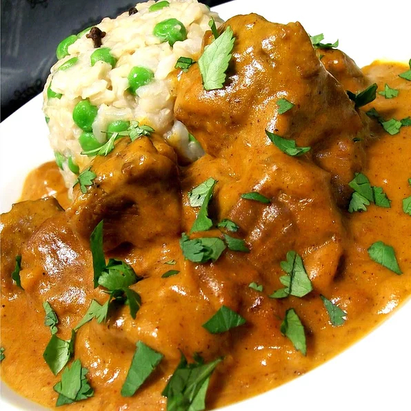

Butter Lamb Gravy

Ingredients
- 2 pounds boneless lamb shoulder, cut into 1 inch pieces
- ½ teaspoon garam masala
- salt
- 2 tablespoons butter, divided
- 1 onion, chopped
- ½ teaspoon ground turmeric (Optional)
- ½ teaspoon minced ginger
- ½ teaspoon minced garlic
- ½ teaspoon cayenne pepper
- 1 tablespoon tomato paste
- 1 cup water
- ½ cup heavy cream
- 1 tablespoon honey
- 1 cup chopped fresh cilantro
Steps
- Season the lamb with garam masala and salt. Heat 1 tablespoon of butter in a large skillet over medium heat. Fry the lamb cubes until browned, stirring constantly. Remove from the skillet and set aside.
- Melt the remaining butter in the same skillet over medium heat. Add the onion; cook and stir until the onion has softened and turned translucent, about 5 minutes.
- Stir in the turmeric, ginger, and garlic. Cook and stir for 1 minute. Stir in the cayenne and tomato paste until well blended, then stir in the water. Bring to a simmer and return lamb to the skillet. Simmer over low heat for about 20 minutes, or until lamb is tender.
- Stir in the cream and honey. Transfer to a serving dish and garnish with cilantro.